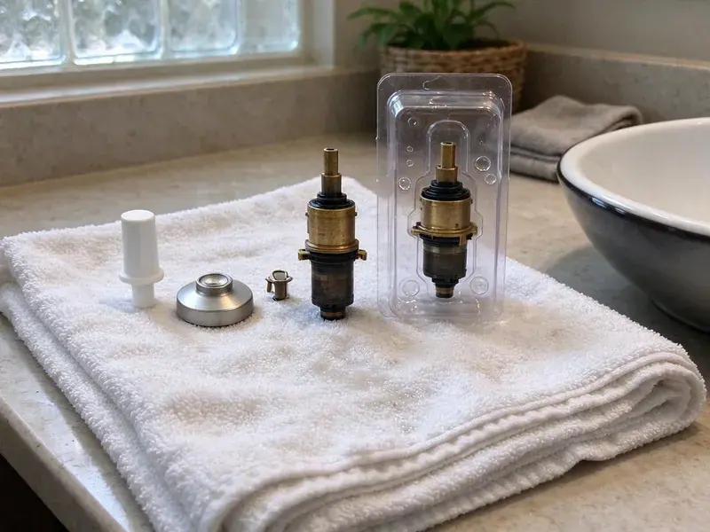

Faucet Repair in Poinciana, FL
For all your faucet repair needs in Poinciana, FL, HDF Plumbing offers professional service for kitchens, bathrooms, and utility sinks.
- Same-Day Faucet Repairs
- Experienced Plumbers
- Transparent Pricing
- All Faucet Types
Fast, Lasting Faucet Repair for Your Home in Poinciana, FL.
Tell us the brand and symptoms and we will quote a flat price before we arrive.
Your Go-To for Faucet Repair in Poinciana, FL
HDF Plumbing specializes in complete faucet repair services throughout Poinciana, FL. From a persistent drip to a completely non-functional fixture, our skilled plumbers diagnose and resolve all common faucet problems using quality parts and proven techniques.
Our expertise includes:
- Aerator and sprayer descaling for low flow and sputtering
- O-ring, seat and spring repairs for dripping two-handle faucets
- Stopping persistent drips and leaks.

Additional Bathroom Plumbing Services in Poinciana, FL
From toilets to showers, our bathroom plumbing team in Poinciana, FL repairs, installs, and replaces every fixture with clean, code-compliant work.


Customers
Why Choose HDF Plumbing for Faucet Repair in Poinciana, FL?
We repair faucets with genuine manufacturer cartridges whenever possible, because cheap generic parts often fail within months. That means your repair lasts and your warranty stays intact.
- Prevent Damage, Timely repairs prevent water stains, mold growth, and cabinet damage under sinks.
- Genuine Parts, We use manufacturer cartridges and seals for a proper fit and long life.
- Full Inspection, We check supply lines, shutoffs and the faucet base for silent leaks.
Citywide Coverage
No matter where you live in Poinciana, our plumbers bring a full stock of cartridges and seals. That keeps faucet repairs to a single visit in most cases.
Experienced Team
Each plumber at HDF Plumbing is a seasoned professional, skilled in correctly diagnosing faucet problems and putting lasting solutions in place. We pride ourselves on the expertise our team applies to every faucet repair, delivering quality workmanship you can trust.
Safety-First Approach
When working on your faucets, our plumbers adhere to strict safety protocols to protect your home and family. We use proper shut-off procedures and carefully test all repairs to prevent future leaks or cross-contamination issues, giving you peace of mind.
Trusted Certified Poinciana Plumbing Services Professionals
At HDF Plumbing, we take pride in providing licensed, certified plumbing services throughout Poinciana, FL. Backed by leading industry credentials, our experienced plumbers combine technical skill with genuine customer care. Whether it is repair, installation, or maintenance, we follow strict safety and quality standards to deliver lasting results you can trust.
Call Us Now PHCC Plumbing Contractor Recognition
PHCC Plumbing Contractor Recognition Better Business Bureau (BBB) Accreditation
Better Business Bureau (BBB) Accreditation Angi Certified Pro
Angi Certified Pro ISO 9001 Quality Management Certification
ISO 9001 Quality Management CertificationTrusted Faucet Repair Services in Poinciana, FL
Disc Faucet Repair in Poinciana
Ceramic disc faucets are known for their durability and are a popular choice in many contemporary Poinciana bathrooms. While generally reliable, they can develop leaks if the ceramic discs become scratched or misaligned, or if the inlet and outlet seals wear out. Our plumbers have the expertise to carefully disassemble these precise mechanisms, clean or replace the ceramic discs, and reseal the faucet to stop leaks and restore full performance.

Outdoor Hose Bib Repair in Poinciana
Outdoor spigots take a beating from sun and weather. Frozen pipes are rare in most of Florida, and many homes have outdoor plumbing that would never survive a northern winter. We repair leaking packing nuts, replace worn washers and install new frost-free hose bibs when needed. We also add vacuum breakers to meet backflow prevention requirements. A leaking hose bib can waste a lot of water over a full season of yard use.
Ball Faucet Repair in Poinciana, FL
Ball faucets, recognizable by their single lever that moves over a rounded cap, are common in many kitchens. They use a rotating ball joint to control water flow and temperature. If your ball faucet is leaking from the spout or base, or if the handle feels loose, it's probably time for a repair. We can replace the spring-loaded rubber seats and O-rings, which are usually the culprits, restoring smooth operation and preventing drips.
Bathroom Faucet Repair in Poinciana, FL
Bathroom faucets, whether in sinks, showers, or tubs, require specialized attention. Common problems include mineral buildup affecting the finish, leaks around the handles, or issues with pop-up drains. Our service covers all types of bathroom faucets, including widespread, centerset, and single-hole designs. We make sure your bathroom plumbing is not only functional but also keeps its good looks, which matters in any home in Florida.
Delta & Moen Faucet Repair in Poinciana, FL
We have extensive experience repairing and servicing faucets from all leading brands, including popular names like Delta, Moen, Kohler, Pfister, and American Standard. Each brand has its own internal components and repair procedures. Our technicians are trained on the specifics of these manufacturers, ensuring that we use the correct replacement parts and methods for your particular faucet model, providing a precise and lasting repair.
Leaky Faucet Repair in Poinciana
A dripping faucet is more than just an annoyance, it's a waste of water and money. Fixing a leak quickly is one of the simplest ways to conserve water at home. Our plumbers can identify the cause, whether it's a worn-out washer, O-ring, or a corroded valve, and replace the failed components. We carry a wide range of common parts so most leaky faucet repairs can be completed in a single visit, restoring your peace and quiet.
Low Water Flow Faucet Repair in Poinciana
Weak or sputtering flow is often caused by mineral buildup in the aerator or cartridge. We remove and clean or replace the aerator, flush the lines and check the cartridge for scale blockage. On pull-down faucets, the spray head and check valves can also clog. If flow is low at every fixture, we test whole-house water pressure.

Cartridge Faucet Repair in Poinciana, FL
Many modern single-handle faucets, often found in newer homes, use a cartridge system. When these fail, you might experience inconsistent water temperature, reduced flow, or difficulty turning the faucet on or off. Our technicians are skilled at diagnosing cartridge issues and replacing them with the correct manufacturer-specific part, so your faucet works like new. We work with all major brands to provide precise repairs.
Faucet Repair Near Me in Poinciana, FL
When you search for 'faucet repair near me' in Poinciana, FL, HDF Plumbing is your trusted local choice. We pride ourselves on rapid response times and delivering high-quality plumbing services right to your doorstep. Our team is familiar with the plumbing infrastructure across the area, allowing for efficient service.
Our commitment to the Poinciana community means providing dependable and accessible faucet repair for every resident. We're always just a phone call away, ready to send a qualified plumber to address your faucet issues quickly and effectively, wherever you are located.
HDF Plumbing at a Glance
- Fully licensed plumbing team covering Poinciana, FL
- 24/7 emergency service with same-day scheduling
- Clear written estimates, no hidden fees
- 4.9-star rated by 739+ Florida customers
Poinciana Map
Poinciana Information
- Population
- 69,309
- Area codes
- 407/689/321
- Service area
- Poinciana and communities within 40 miles
- Nearby
- Kissimmee, St. Cloud, Winter Haven, Four Corners
Many wells in Florida produce water with a sulfur smell or high iron, which often calls for filtration to protect fixtures and appliances. Timely faucet repair in Poinciana helps prevent mineral buildup and extend the life of your plumbing fixtures, protecting your home from potential water damage.
Expert Services
Trust our professionals for reliable HDF Plumbing solutions in Poinciana, FL.
Our Specialized Plumbing Services in Poinciana, FL
At HDF Plumbing, we provide a complete range of plumbing services across Poinciana, FL. From leak detection to full system installations, our team ensures fast, precise, and affordable service for both residential and commercial properties. Explore our core services below:


How Our Faucet Repair Process Works in Poinciana, FL
Our faucet repair process is designed for efficiency and transparency, giving you a clear understanding of the work being done.
Request a Quote
Call (904) 925-7356 or fill out our online form to schedule your faucet repair service. We'll gather some basic information about your issue and set up a good appointment time.
On-Site Diagnosis
A certified plumber will arrive at your Poinciana home, assess the faucet problem, and pinpoint the exact cause of the leak or malfunction. We'll explain the issue clearly.
Expert Repair
Once the diagnosis is complete and you approve the estimate, our plumber will perform the necessary repairs using quality parts and proven techniques to deliver a lasting fix.
Frequently Asked Questions About Faucet Repair in Poinciana
The cost of faucet repair in Poinciana can range from $120 to $350, depending on the type of faucet, the specific parts needed, and the difficulty of the repair. A simple washer replacement will be on the lower end, while a cartridge replacement in a high-end faucet might be more. We provide a written estimate before any work begins.
Most standard faucet repairs, such as replacing a washer or cartridge, can be completed by an skilled plumber in about 30 minutes to an hour. More complex issues or specialty faucets might take longer, but we aim for efficient service to minimize disruption to your home in Poinciana.
Absolutely. A faucet dripping at just one drip per second can waste over 3,000 gallons of water per year. That's enough to take more than 180 showers. This continuous waste will definitely show up as an increase on your water bill, making prompt repair a good investment in Poinciana.
Generally, simple faucet repairs like replacing internal components, handles, or the entire faucet (if it's a like-for-like replacement) do not require a permit in Poinciana. However, if the repair involves altering the existing plumbing lines or significantly changing the fixture type, a permit might be necessary. Our plumbers know local codes and will let you know if a permit is required.
Common signs include a persistent drip or leak, difficulty turning the handle, low water pressure, strange noises when the faucet is on, or visible corrosion around the base or spout. If you notice any of these issues, it's best to address them quickly to prevent further damage or water waste.
Faucet repair involves fixing the existing fixture by replacing specific worn or broken internal components like washers, O-rings, or cartridges. Faucet replacement means removing the old faucet entirely and installing a brand new one. We recommend replacement when a faucet is severely damaged, very old, or if you simply want an upgrade.
Low pressure at one faucet is typically a clogged aerator or cartridge. Low pressure everywhere could mean a failing pressure regulator, a supply issue or old corroded pipes.
Simple cartridge swaps can be a DIY job if you identify the correct part. Stuck cartridges, corroded valve bodies and leaks under the sink are better handled by a plumber.
What People Are Saying About Our Plumbing Experts?

Patricia H.
We had a slab leak that two other companies could not find. HDF Plumbing located it in under an hour, explained our options, and the price matched the quote to the dollar.
Slab Leak Repair · Poinciana, FL
Robert G.
The trenchless sewer replacement saved our front yard. They walked us through the camera inspection footage first so we knew exactly what we were paying for.
Sewer Line Replacement · St. Cloud, FLJames P.
Our commercial plumbing system had a leak under the sink, and HDF Plumbing handled it professionally. The plumbers arrived quickly and restored everything without disruption to our customers.
Commercial Plumbing · Kissimmee, FL
Laura S.
I scheduled a water heater replacement, and the team made the process smooth and affordable. The new unit works perfectly, and they cleaned up after completing the job.
Water Heater Replacement · Orlando, FL
Emily R.
I called HDF Plumbing for plumbing repair, and the technician was fast, polite, and thorough. They explained the problem clearly and fixed it the same day. I will definitely hire them again. Highly recommended!
Plumbing Repair · Four Corners, FL
Daniel K.
A pipe burst at 11 pm and they actually answered. The plumber showed up within the hour, shut everything down, and had us back to normal the next morning. Could not ask for more.
Emergency Plumbing · Four Corners, FL